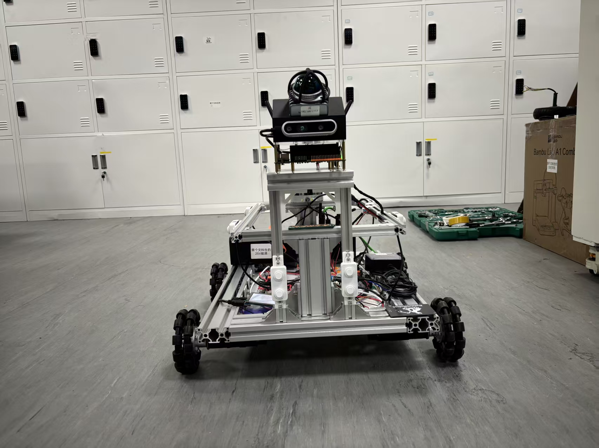

What It Does
项目做的是什么
- 围绕真实移动底盘积累 ROS2 节点、TF、里程计、雷达、相机和底层驱动调试记录。
- 覆盖 Cartographer、FAST-LIO2、Point-LIO2、RTAB-Map、Nav2 等导航建图链路。
- 保留多轮结构打样、安装布置、线束整理和现场测试结果，便于后续 AMR2 与 VLN 复用。
VLN Relation
和当前 VLN 主线的关系
AMR 是 VLN 的底座能力来源：只有底盘执行、定位和地图链路稳定，语言策略生成的 waypoint 才能在真车上被验证。
Craft Record
工程痕迹
这个项目保留了从硬件选型、结构验证、驱动调试、话题链路到现场反馈的连续记录。页面里放的不是单独的效果截图，而是一段可回溯的迭代线索。
Media
关键画面


README Snapshot
README / 项目说明片段
RabbitRobot
面向端到端规划研究的 ROS2 机器人项目群
github.com/lijinghai/RabbitRobot
---
项目定位
RabbitRobot 是一个以 ROS2 移动机器人 为核心、逐步扩展到 手持建图、具身智能机械臂、场景化服务机器人与端到端规划研究 的个人机器人项目群。
这个仓库不是单一 demo，而是一个长期积累的机器人研发工作区：里面包含真实硬件调试记录、ROS2 代码、SLAM / Nav2 / 感知实验、SolidWorks 结构设计、Obsidian 技术笔记、产品场景调研和展示网站。
当前最重要的研究主线是：
在真实移动机器人平台上，研究窄通道、低附着、复杂场景下的端到端局部规划与传统 Nav2 规划方法的对比。
具体落点包括：
- 用 AMR 小车采集真实
scan / odom / cmd_vel / goal数据； - 以 Nav2、DWB、Pure Pursuit、MPC 等传统方法作为专家或 baseline；
- 训练端到端局部 planner，从 LiDAR / costmap / goal 直接输出
cmd_vel或未来轨迹； - 在鸡场窄通道、室内走廊等真实场景中做闭环验证。
---
项目全景
graph TB
R["RabbitRobot 项目群"]
R --> AMR["RabbitRobot_AMR<br/>移动机器人底盘 / 核心研究平台"]
R --> ARM["RabbitRobot_Arm<br/>LeRobot / SmolVLA / 机械臂"]
R --> LIDAR["RabbitRobot_HandLiDAR<br/>手持 4D LiDAR 建图仪"]
R --> SCFH["RabbitRobot_SCFH<br/>智慧鸡场净环机器人"]
R --> ELDER["RabbitRobot_ElderBuddy<br/>老人陪伴机器人概念"]
R --> WEB["RabbitRobot_Web<br/>项目展示网站"]
AMR --> NAV["Nav2 / DWB / SLAM / EKF / 底盘控制"]
AMR --> E2E["端到端局部规划研究"]
LIDAR --> MAP["高质量地图采集"]
SCFH --> SCENE["窄通道真实应用场景"]
ARM --> VLA["具身智能与 VLA 实验"]---
目录结构
RabbitRobot/
├── RabbitRobot_AMR/ # 移动机器人底盘，项目核心
├── RabbitRobot_Arm/ # 具身智能机械臂，LeRobot / SmolVLA 实验
├── RabbitRobot_HandLiDAR/ # 手持雷达建图仪，LiDAR + 视觉融合建图
├── RabbitRobot_SCFH/ # 智慧鸡场净环机器人，窄通道应用场景
├── RabbitRobot_ElderBuddy/ # 老人陪伴机器人概念设计与调研
├── RabbitRobot_Web/ # 项目宣传网站
├── README.assets/ # README 图片资源
├── 素材/ # 外部资料与素材，默认不纳入核心维护
├── README.md # 项目主页
├── 修改建议.md # 当前 AMR 控制链路和导航问题分析
├── RabbitRobot.xmind # 项目脑图
└── RabbitRobot_架构图.excalidraw---
核心项目：RabbitRobot_AMR
RabbitRobot_AMR/ 是整个仓库的主线项目，目标是构建一个可以持续迭代的 ROS2 自主移动机器人平台。
迭代版本
| 版本 | 时间 | 定位 | 主要内容 |
|---|---:|---|---|
| V1.0 | 2025.06 - 2025.09 | 四驱原型车 | 树莓派 5、思岚 A1、宇树 L1、DABAI DCW2、Cartographer、Nav2、视觉感知 |
| V2.0 | 2025.10 | 四驱升级车 | Jetson Orin Nano Super、C50C、MID360、VLP-16、FAST-LIO2、Point-LIO2、Autoware |
| V3.0 | 2026.03 | 平衡车方向 | Hoverboard FOC、STM32、ST-Link、IMU 接入 |
| V4.0 | 2026.03+ | 全向轮方向 | SolidWorks 建模与全向移动底盘探索 |
已覆盖能力
- ROS2 Humble / Jazzy 工程实践；
- 2D LiDAR 与 4D LiDAR 建图；
- Cartographer、FAST-LIO2、Point-LIO2、RTAB-Map；
完整 README 已保存在本站快照中，可从本页底部打开。